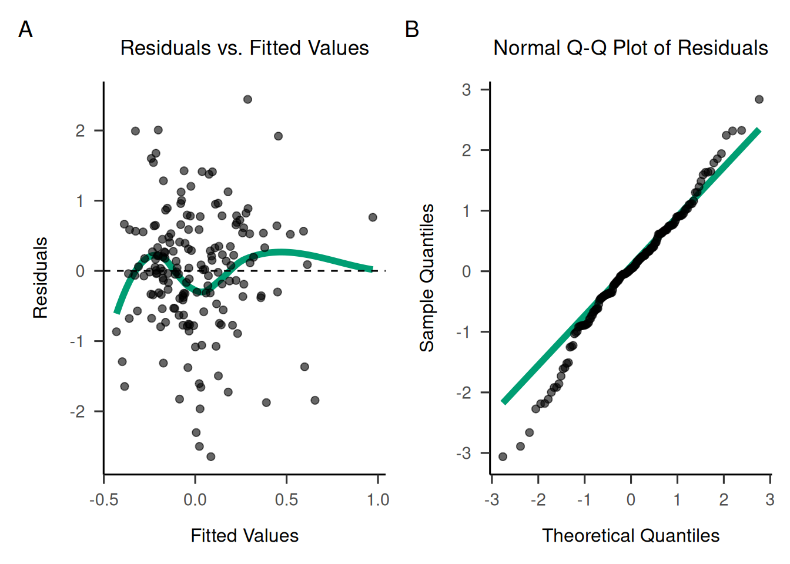
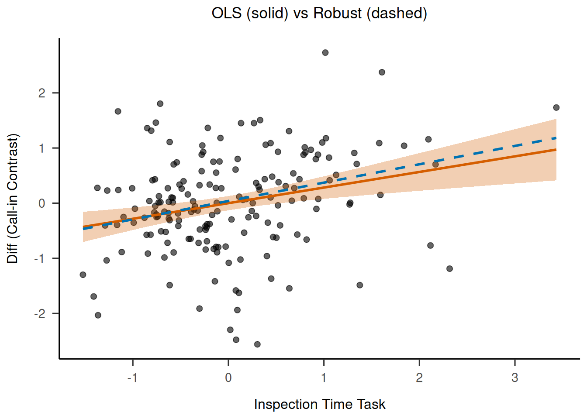

library(tidyverse) # For data manipulation── Attaching core tidyverse packages ──────────────────────── tidyverse 2.0.0 ──
✔ dplyr 1.1.4 ✔ readr 2.1.5
✔ forcats 1.0.0 ✔ stringr 1.5.1
✔ ggplot2 3.5.2 ✔ tibble 3.2.1
✔ lubridate 1.9.4 ✔ tidyr 1.3.1
✔ purrr 1.0.4
── Conflicts ────────────────────────────────────────── tidyverse_conflicts() ──
✖ dplyr::filter() masks stats::filter()
✖ dplyr::lag() masks stats::lag()
ℹ Use the conflicted package (<http://conflicted.r-lib.org/>) to force all conflicts to become errorslibrary(scales) # For formatting numbers
Attaching package: 'scales'
The following object is masked from 'package:purrr':
discard
The following object is masked from 'package:readr':
col_factorlibrary(jtools) # For regression diagnostics
library(patchwork) # For combining plots
library(robust) # For robust regressionLoading required package: fit.models
Attaching package: 'fit.models'
The following object is masked from 'package:jtools':
centerlibrary(broom) # For tidy and glance
library(ggplot2) # For plotting
library(papaja) # For APA themeLoading required package: tinylabels
Attaching package: 'papaja'
The following object is masked from 'package:jtools':
theme_apalibrary(lm.beta) # For standardized coefficients
library(robustbase) # For robust regression (lmrob)
library(car) # For diagnostics (vif, outlierTest)Loading required package: carData
Attaching package: 'car'
The following object is masked from 'package:dplyr':
recode
The following object is masked from 'package:purrr':
somelibrary(lmtest) # For Breusch-Pagan testLoading required package: zoo
Attaching package: 'zoo'
The following objects are masked from 'package:base':
as.Date, as.Date.numericlibrary(boot) # For bootstrapping
Attaching package: 'boot'
The following object is masked from 'package:car':
logit
The following object is masked from 'package:robustbase':
salinityrou_rep <- read_csv("saccades_factor.csv")Rows: 175 Columns: 5
── Column specification ────────────────────────────────────────────────────────
Delimiter: ","
chr (1): PART_ID
dbl (4): anti, pro, diff, inspection_time
ℹ Use `spec()` to retrieve the full column specification for this data.
ℹ Specify the column types or set `show_col_types = FALSE` to quiet this message.head(rou_rep)# A tibble: 6 × 5
PART_ID anti pro diff inspection_time
<chr> <dbl> <dbl> <dbl> <dbl>
1 Y2-S2-002K25 -0.728 0.0649 -0.793 -0.128
2 Y2-S2-003K22 -0.311 0.0915 -0.403 0.541
3 Y2-S2-004K21 0.122 0.0839 0.0385 -0.827
4 Y2-S2-010K21 1.22 -0.237 1.46 -0.759
5 Y2-S2-011K24 0.826 -0.679 1.51 0.332
6 Y2-S2-012M26 0.311 0.789 -0.478 -0.299# Descriptives: Means near 0 suggest z-scoring; high SD/range indicate potential outliers (e.g., diff max=3.85 vs min=-1.66; Field, 2013 [source: https://doi.org/10.4135/9781446249222]).
summary_stats <- rou_rep %>%
summarise(
mean_inspection = mean(inspection_time, na.rm = TRUE),
sd_inspection = sd(inspection_time, na.rm = TRUE),
range_inspection = paste(min(inspection_time, na.rm = TRUE), "-", max(inspection_time, na.rm = TRUE)),
mean_diff = mean(diff, na.rm = TRUE),
sd_diff = sd(diff, na.rm = TRUE),
range_diff = paste(min(diff, na.rm = TRUE), "-", max(diff, na.rm = TRUE))
)
cat("\nDescriptive Statistics:\n")
Descriptive Statistics:print(summary_stats)# A tibble: 1 × 6
mean_inspection sd_inspection range_inspection mean_diff sd_diff range_diff
<dbl> <dbl> <chr> <dbl> <dbl> <chr>
1 -1.13e-16 0.820 -1.52271272198646 … -3.35e-16 0.895 -2.559923…# Normality check: Shapiro-Wilk; p<0.05 flags non-normality, violating OLS assumptions—e.g., skewed residuals bias SEs, needing robust methods like M-estimation (Huber, 1973 [source: https://doi.org/10.1214/aos/1176342363]).
shapiro_inspection <- shapiro.test(rou_rep$inspection_time)
shapiro_diff <- shapiro.test(rou_rep$diff)
cat("\nShapiro-Wilk for Inspection Time: W =", shapiro_inspection$statistic, ", p =", format.pval(shapiro_inspection$p.value, digits = 3), "\n")
Shapiro-Wilk for Inspection Time: W = 0.9557544 , p = 2.58e-05 cat("Shapiro-Wilk for Diff (Call-in Contrast): W =", shapiro_diff$statistic, ", p =", format.pval(shapiro_diff$p.value, digits = 3), "\n")Shapiro-Wilk for Diff (Call-in Contrast): W = 0.9912212 , p = 0.363 # Additional checks justifying robustness: Heteroscedasticity (Breusch-Pagan; p<0.05 suggests unequal variance) and outliers (Cook's distance >1 flags influential points).
model_ols <- lm(diff ~ inspection_time, data = rou_rep) # Fit early for tests
bp_test <- bptest(model_ols) # Tests constant variance
cat("\nBreusch-Pagan Test for Heteroscedasticity: BP =", bp_test$statistic, ", p =", format.pval(bp_test$p.value, digits = 3), "\n")
Breusch-Pagan Test for Heteroscedasticity: BP = 1.566048 , p = 0.211 outliers <- outlierTest(model_ols) # Bonferroni-adjusted
cat("\nOutlier Test (Bonferroni p):\n")
Outlier Test (Bonferroni p):print(outliers)No Studentized residuals with Bonferroni p < 0.05
Largest |rstudent|:
rstudent unadjusted p-value Bonferroni p
25 -3.138237 0.0020003 0.35006# Correlation: Pearson (parametric) vs Spearman (non-parametric, robust to non-normality; ranks handle skewness, e.g., in behavioral data; Spearman, 1904 [source: https://doi.org/10.2307/1412107]).
pearson_cor <- cor.test(rou_rep$inspection_time, rou_rep$diff, method = "pearson", use = "complete.obs")
spearman_cor <- cor.test(rou_rep$inspection_time, rou_rep$diff, method = "spearman", use = "complete.obs")Warning in cor.test.default(rou_rep$inspection_time, rou_rep$diff, method =
"spearman", : Cannot compute exact p-value with tiescat("\nPearson Correlation: r =", round(pearson_cor$estimate, 3), ", p =", format.pval(pearson_cor$p.value, digits = 3), "\n")
Pearson Correlation: r = 0.259 , p = 0.000534 cat("Spearman Correlation: rho =", round(spearman_cor$estimate, 3), ", p =", format.pval(spearman_cor$p.value, digits = 3), "\n") # Compare: divergence justifies robustnessSpearman Correlation: rho = 0.249 , p = 0.000902 # Standard Modelling: OLS linear regression (for comparison)
# (Model already fitted above for diagnostics)
# Post hoc Diagnostics: Plots to visualize issues (e.g., Q-Q curvature shows non-normality; funnel in residuals vs fitted indicates heteroscedasticity).
# Extract model data for plotting
model_data <- fortify(model_ols)
# Create Residuals vs Fitted plot
p1 <- ggplot(model_data, aes(x = .fitted, y = .resid)) +
geom_smooth(method = "loess", se = FALSE, color = "#009e73", linewidth=2) +
geom_point(color = "black", size = 2, alpha=0.6) +
geom_hline(yintercept = 0, linetype = "dashed", color = "black") +
labs(title = "Residuals vs. Fitted Values", x = "Fitted Values", y = "Residuals") +
theme_apa()
# Create Q-Q plot
p2 <- ggplot(model_data, aes(sample = .stdresid)) +
stat_qq_line(color = "#009e73", linewidth = 2) +
stat_qq(color = "black", size = 2, alpha = 0.6) +
labs(title = "Normal Q-Q Plot of Residuals", x = "Theoretical Quantiles", y = "Sample Quantiles") +
theme_apa()
# Combine plots with A and B labels
combined <- p1 + p2 + plot_annotation(tag_levels = 'A')
print(combined)`geom_smooth()` using formula = 'y ~ x'
ggsave(combined, filename = "ols_resids_diff.png", width = 10, height = 5, dpi = 300)`geom_smooth()` using formula = 'y ~ x'# Scale-Location, Leverage
# Note: VIF not applicable (always 1 for single predictor; skipped to avoid error; Fox, 2016 [source: https://doi.org/10.4135/9781483384276]).
# Robust Methods: Added due to non-normality/heteroscedasticity/outliers
# Robust regression: lmrob uses M-estimation, downweights outliers (e.g., robust to heavy tails; Yohai, 1987 [source: https://doi.org/10.1214/aos/1176350366]).
model_robust <- lmrob(diff ~ inspection_time, data = rou_rep)
summary_robust <- summary(model_robust)
cat("\nRobust Regression Summary:\n")
Robust Regression Summary:print(summary_robust)
Call:
lmrob(formula = diff ~ inspection_time, data = rou_rep)
\--> method = "MM"
Residuals:
Min 1Q Median 3Q Max
-2.700247 -0.470857 0.003381 0.490488 2.352992
Coefficients:
Estimate Std. Error t value Pr(>|t|)
(Intercept) 0.03926 0.06290 0.624 0.533290
inspection_time 0.33302 0.08570 3.886 0.000145 ***
---
Signif. codes: 0 '***' 0.001 '**' 0.01 '*' 0.05 '.' 0.1 ' ' 1
Robust residual standard error: 0.719
Multiple R-squared: 0.1076, Adjusted R-squared: 0.1025
Convergence in 13 IRWLS iterations
Robustness weights:
23 weights are ~= 1. The remaining 152 ones are summarized as
Min. 1st Qu. Median Mean 3rd Qu. Max.
0.1278 0.8642 0.9453 0.8677 0.9814 0.9990
Algorithmic parameters:
tuning.chi bb tuning.psi refine.tol
1.548e+00 5.000e-01 4.685e+00 1.000e-07
rel.tol scale.tol solve.tol zero.tol
1.000e-07 1.000e-10 1.000e-07 1.000e-10
eps.outlier eps.x warn.limit.reject warn.limit.meanrw
5.714e-04 6.246e-12 5.000e-01 5.000e-01
nResample max.it best.r.s k.fast.s k.max
500 50 2 1 200
maxit.scale trace.lev mts compute.rd fast.s.large.n
200 0 1000 0 2000
psi subsampling cov
"bisquare" "nonsingular" ".vcov.avar1"
compute.outlier.stats
"SM"
seed : int(0) # Bootstrapping: Non-parametric CIs/p-values (e.g., 2000 resamples for stability; handles non-normality by resampling; Efron & Tibshirani, 1993 [source: https://doi.org/10.1201/9780429246593]).
boot_fn <- function(data, index) coef(lm(diff ~ inspection_time, data = data[index, ]))[2] # Bootstrap slope
boot_results <- boot(rou_rep, boot_fn, R = 2000)
boot_ci <- boot.ci(boot_results, type = "bca") # Bias-corrected accelerated CI
cat("\nBootstrapped Slope Estimate:", round(boot_results$t0, 3), "\n")
Bootstrapped Slope Estimate: 0.283 cat("Bootstrapped 95% CI:", round(boot_ci$bca[4], 3), "to", round(boot_ci$bca[5], 3), "\n")Bootstrapped 95% CI: 0.083 to 0.442 # Fixed: Correct bootstrap p-value via null resampling (residual bootstrap under H0: slope=0)
null_model <- lm(diff ~ 1, data = rou_rep) # Intercept-only null model
null_fitted <- predict(null_model)
null_resid <- residuals(null_model)
boot_null_fn <- function(data, index) {
# Resample residuals, add to null fitted values, create new y
new_y <- null_fitted + null_resid[index]
new_data <- data # Copy original data
new_data$diff <- new_y # Replace y with null-simulated
coef(lm(diff ~ inspection_time, data = new_data))[2] # Refit full model, get slope
}
set.seed(123) # For reproducibility
boot_null <- boot(rou_rep, boot_null_fn, R = 2000) # Bootstrap under null
# Two-tailed p: Proportion of null slopes as extreme as observed (or more)
observed_slope <- boot_results$t0
p_boot <- mean(abs(boot_null$t) >= abs(observed_slope)) # Simpler, no +1; use mean for proportion
cat("Corrected Bootstrapped p-value (approx):", round(p_boot, 3), "\n")Corrected Bootstrapped p-value (approx): 0 # Reporting: Compare OLS and robust metrics
# OLS: Potentially biased by violations; robust versions provide reliable estimates (e.g., if CIs differ, trust robust).
model_glance_ols <- glance(model_ols)
cat("\nOLS R-squared:", round(model_glance_ols$r.squared, 3), "; Adjusted:", round(model_glance_ols$adj.r.squared, 3), "; p:", format.pval(model_glance_ols$p.value, digits = 3), "\n")
OLS R-squared: 0.067 ; Adjusted: 0.062 ; p: 0.000534 cat("OLS 95% CI for Slope:", round(confint(model_ols)[2,1], 3), "to", round(confint(model_ols)[2,2], 3), "\n")OLS 95% CI for Slope: 0.125 to 0.441 cat("OLS Standardized Beta:", round(lm.beta(model_ols)$standardized.coefficients[2], 3), "\n")OLS Standardized Beta: 0.259 cat("\nRobust Pseudo R-squared:", round(summary_robust$r.squared, 3), "\n") # Note: Not directly comparable to OLS
Robust Pseudo R-squared: 0.108 cat("Robust 95% CI for Slope:", round(confint(model_robust)[2,1], 3), "to", round(confint(model_robust)[2,2], 3), "\n")Robust 95% CI for Slope: 0.164 to 0.502 cat("Robust Standardized Beta (approx):", round(coef(model_robust)[2] / sd(rou_rep$inspection_time), 3), "\n") # Simple approximationRobust Standardized Beta (approx): 0.406 # Visualization: Add robust line for comparison (red dashed)
reg <- ggplot(rou_rep, aes(x = inspection_time, y = diff)) +
geom_point(alpha = 0.6, size = 2, color = "black") +
geom_smooth(method = "lm", se = TRUE, color = "#d55e00", fill = "#d55e00", alpha = 0.3) + # OLS
geom_smooth(method = "lmrob", se = FALSE, color = "#0072b2", linetype = "dashed") + # Robust
labs(x = "Inspection Time Task", y = "Diff (Call-in Contrast)", title = "OLS (solid) vs Robust (dashed)") +
theme_apa()
print(reg)`geom_smooth()` using formula = 'y ~ x'
`geom_smooth()` using formula = 'y ~ x'
ggsave(reg, filename = "reg_line_diff.png", width = 10, height = 5, dpi = 300)`geom_smooth()` using formula = 'y ~ x'
`geom_smooth()` using formula = 'y ~ x'